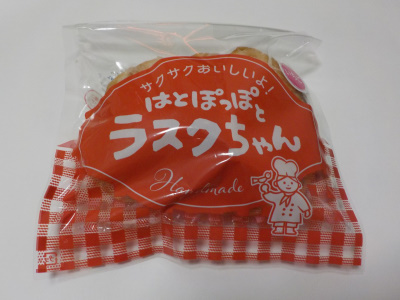
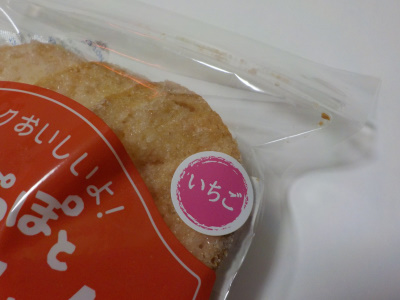
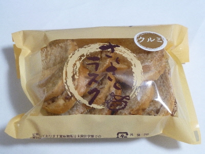
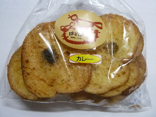
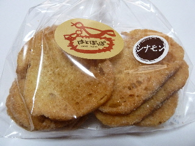
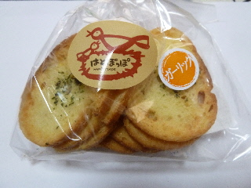
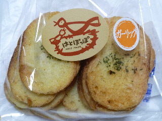

はとぽっぽの いちごラスク
2021/11/28

ジッパーに入ったラスクです。ジッパーいいですね。
食べきれないから買うのをよそうとか、今は全部食べれないから開封するのを止めようとか考えなくていいです。
他のお菓子もドンドンジッパー入りにして欲しいです。

いちご味のラスクです。ラスクの片面には砂糖が沢山付いてるので、甘くて美味しいです。
おやつにピッタリな商品です。子供とか喜びそうって思いました。
島根県大田市大田町大田イ674-16
2021/11/28

ジッパーに入ったラスクです。ジッパーいいですね。
食べきれないから買うのをよそうとか、今は全部食べれないから開封するのを止めようとか考えなくていいです。
他のお菓子もドンドンジッパー入りにして欲しいです。

いちご味のラスクです。ラスクの片面には砂糖が沢山付いてるので、甘くて美味しいです。
おやつにピッタリな商品です。子供とか喜びそうって思いました。
2017/12/17
名前のとおりサクサクしたラスクでした。

砂糖が沢山ついてて、甘くて美味しかったです。
ゴンガリとしたラスクとクルミの相性も良かったです。
2014/08/15
夏はかれーかな。

カレーラスクが美味しそうでした。
真ん中にある黒いのは黒胡椒ですかね。アクセントになってて見た目もいいです。
味はスパイシーでした。
お茶にもビールにも合う感じでした。
2013/03/16
砂糖とシナモンがかかった甘いラスクです。

砂糖があるぶんチョット固いです。
でもサクサクですよ。
シナモン味っていいですね。
ラスクに合ってて美味しかったです。
2013/03/03
サクサクで美味しいラスクですね。

ちゃんとラスク用に作っているのがいいんでしょうね。
乾燥っぷりがとってもいいです。
また買いたいです。
2012/02/19
サクサクと軽い歯ごたえで、食べやすいラスクでした。

バターがまんべんなく塗ってあって、味にむらがなかったです。
ガーリックが弱めで、食べやすかったし、後味も良かったです。